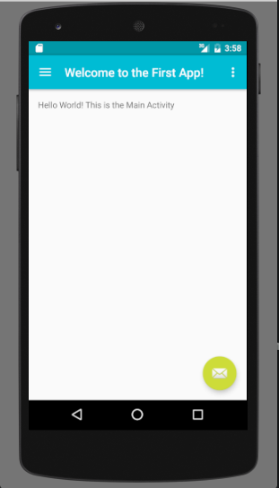

Android for Beginners
A practical introduction to app development on Android
Course source materials at on github.
Taught by Audrey Troutt / @auditty
Is this class for you?
You should be..
- curious and excited to learn about how apps are built.
- prepared to face challenges and have some fun along the way.
- already have some experience with programming concepts like variables, methods, classes, arrays, conditionals, and loops.
Before the first class
- Get a Google Account
- Install Android Studio
- Download the App Code
- Optional: Prep your Android device
- Bonus: learn about Java and Android
HINT: Press Down Arrow ↓ to navigate to the sub-sections below.
Google Account
If you have one, create one for free.
We are going to use this for logging in to the apps we will be creating.
Android Studio
If you don't have it already, download and install Android Studio.
This is the editor we will use to write our apps.
Get Code
Download the code for this class:
- Go to GitHub atroutt/android-beginners
- On the top right press "Clone or download" and click "Download ZIP"
- On your computer, open the zip files with your favorite unzip program and put the 'android-beginners' folder somewhere you can find it later. This repo contains the source for both of the apps we will be using in this class in addition to these slides.

Optional: Prep your Android device
If you have an an Android phone enable developer options so that you can install and run your own apps.
An Android phone is not required for this course.
Bonus: Learn about Java and Android
If you just can't wait to get started, here's some resources to start learning now:
- Google's Android Training specifically, Building your First App (free)
- Udacity's Developing Android Apps (free)
- Udacity's How to use Git and Github (free)
- Head First Java, 2nd Edition by Kathy Sierra and Bert Bates
- Udemy's Java Tutorial for Complete Beginners (free)
HINT: This is the end of the section, press Right Arrow → to navigate to the next section.
Course Overview
- Running your first app
- Anatomy of an app
- APIs and authentication
- Chat and messaging
- Maps and location
- Cameras and photos
- BONUS: Publishing to the Play Store
HINT: Press ESC to enter the slide overview.
Running your first app
In this section you will learn how to import a new project into Android Studio, and build and run it on your device or emulator.
Download App Code
If you haven't already,
download the source code for the first app (zip).
Alternatively, clone the repo using git:
git clone git@github.com:atroutt/android-beginners.gitImport Project

Launch Android studio
Choose to open an existing Android Studio Project
Choose the AndroidBeginnersFirstApp folder on your computer.
Gradle Sync
Before you can run your first app, you need to make sure you have all the dependencies downloaded. To do that select "Sync Project with Gradle Files" from the top menu bar. This may take a minute.

Run your App (!)

In the top menu choose "Run 'app'"
Android Studio is going to ask you to "Select Deployment Target" — this means choose the device you would like to run on
PRO TIP: Check the box that says "Use same device for future launches."
Project: First Run
Head over to Android Studio and run your first app.
Tour of Android Studio
There's a lot to see and do in Android Studio. Let's take a brief tour of the parts we will use in this course.
Anatomy of an app
Now that you have been introduced to Android Studio, let's dissect an app!

Application
This is an app, also known as an Application

Application
Every app has one Application class

Activity
An app usually has many screens.
These are called Activities.

Activity
Here's a screen from our app. It is defined by an Activity class you'll see later.

View
An Activity usually has many views

View
An Activity usually has many views

But first
Just Enough Java
Just Enough Java
What does all this mean?
package com.audreytroutt.androidbeginners.firstapp;
import android.app.Application;
public class MyFirstApplication extends Application {
int toastLength = Toast.LENGTH_LONG;
@Override
public void onCreate() {
super.onCreate();
showToast("I have been created!");
}
public void showToast(String message) {
Toast.makeText(this, message, Toast.LENGTH_LONG).show();
}
}
Just Enough Java
What does all this mean?
package com.audreytroutt.androidbeginners.firstapp;
import android.app.Application; // import
public class MyFirstApplication extends Application { // class
int toastLength = Toast.LENGTH_LONG; // field
@Override
public void onCreate() { // method
super.onCreate();
showToast("I have been created!");
}
public void showToast(String message) { // method
Toast.makeText(this, message, Toast.LENGTH_LONG).show();
}
}
Just Enough Java
Anything after // is a comment in Java.
// This is a commentJust Enough Java
Every line of code must end with a semi-colon;
int numberOfErrors = 0;Just Enough Java
Everything in Java is an object.
A class is the definition of an object in Java
// this is a class
public class MyFirstApplication extends Application {
// your fields and methods go in here
}All of your code goes inside of classes.
Just Enough Java
A method defines the behavior of your class.
Everything your app does will be defined inside of methods inside of classes.
public void showToast(String message) { // this is a method
Toast.makeText(this, message, toastLength).show();
}
Just Enough Java
A field holds some data for your object.
public class MyFirstApplication extends Application {
int toastLength; // this is a field
public void showToast(String message) {
Toast.makeText(this, message, toastLength).show();
}
}
PRO TIP: always put your fields at the top of your class, above any methods.
Just Enough Java
Up at the top above the class body there are two things you will see: the package and import declarations.
package com.audreytroutt.androidbeginners.firstapp;
import android.app.Application;
import android.widget.Toast;
import java.util.Date;
package is like a folder path to your class--it will be auto-generated for you.
import is used to include other code into your class.
Anatomy of an App (Continued)
Let's dissect an app!
Application
This is an app, also known as an Application
Application
Your application is always represented in your Application's Manifest, AndroidManifest.xml.

Application
The Android Manifest is an XML file that declares things like the name of your Application, what Activities it includes, and which Activity should be displayed on launch.
<?xml version="1.0" encoding="utf-8"?>
<manifest xmlns:android="http://schemas.android.com/apk/res/android"
package="com.audreytroutt.androidbeginners.firstapp">
<application
android:allowBackup="true"
android:icon="@mipmap/ic_launcher"
android:label="@string/app_name"
android:supportsRtl="true"
android:theme="@style/AppTheme"
android:name=".MyFirstApplication">
<activity
android:name=".MainActivity"
android:label="Welcome to the First App!"
android:theme="@style/AppTheme.NoActionBar">
<intent-filter>
<action android:name="android.intent.action.MAIN" />
<category android:name="android.intent.category.LAUNCHER" />
</intent-filter>
</activity>
<activity
android:name=".PaintingListActivity"
android:label="Paintings (List)"
android:parentActivityName=".MainActivity">
</activity>
<activity
android:name=".PaintingDetailActivity"
android:parentActivityName=".MainActivity">
</activity>
</application>
</manifest>
Application
An instance of your Application class is created when your app launches and sticks around until your app is stopped.
You are not required to create your own Application class implementation. There is a default that works well enough for simple use cases.
Application
If you do create your own implementation it has to extend android.app.Application. It will look something like this:
package com.audreytroutt.androidbeginners.firstapp;
import android.app.Application;
public class MyFirstApplication extends Application {
@Override
public void onCreate() {
super.onCreate();
// At this point my first application was just created
}
}
Activity
As we learned earlier, an app can have many Activities.
Activity
Here's a screen from our app.
Activity
Activities are registered in your Application Manifest
Here you can see three Activities for my app.
<?xml version="1.0" encoding="utf-8"?>
<manifest xmlns:android="http://schemas.android.com/apk/res/android"
package="com.audreytroutt.androidbeginners.firstapp">
<application
android:allowBackup="true"
android:icon="@mipmap/ic_launcher"
android:label="@string/app_name"
android:supportsRtl="true"
android:theme="@style/AppTheme"
android:name=".MyFirstApplication">
<!-- Here's the first Activity -->
<activity
android:name=".MainActivity"
android:label="Welcome to the First App!"
android:theme="@style/AppTheme.NoActionBar">
<intent-filter>
<action android:name="android.intent.action.MAIN" />
<category android:name="android.intent.category.LAUNCHER" />
</intent-filter>
</activity>
<activity
android:name=".PaintingListActivity"
android:label="Paintings (List)"
android:parentActivityName=".MainActivity">
</activity>
<activity
android:name=".PaintingDetailActivity"
android:parentActivityName=".MainActivity">
</activity>
</application>
</manifest>
Activity
Let's take a look at our MainActivity.

HINT: The name MainActivity can be anything you want. It's only by convention that the name has "Activity" in it. The only requirement is that the class extends Activity.
MainActivity
Inside an Activity class you again see an onCreate method. This is often where you set up what is displayed on the screen.
public class MainActivity extends AppCompatActivity implements NavigationView.OnNavigationItemSelectedListener {
@Override
protected void onCreate(Bundle savedInstanceState) {
super.onCreate(savedInstanceState);
setContentView(R.layout.activity_main);
Toolbar toolbar = (Toolbar) findViewById(R.id.toolbar);
setSupportActionBar(toolbar);
FloatingActionButton fab = (FloatingActionButton) findViewById(R.id.fab);
fab.setOnClickListener(new View.OnClickListener() {
@Override
public void onClick(View view) {
Snackbar.make(view, "Hello, Test!", Snackbar.LENGTH_LONG)
.setAction("Action", null).show();
}
});
DrawerLayout drawer = (DrawerLayout) findViewById(R.id.drawer_layout);
ActionBarDrawerToggle toggle = new ActionBarDrawerToggle(
this, drawer, toolbar, R.string.navigation_drawer_open, R.string.navigation_drawer_close);
drawer.setDrawerListener(toggle);
toggle.syncState();
NavigationView navigationView = (NavigationView) findViewById(R.id.nav_view);
navigationView.setNavigationItemSelectedListener(this);
}
@Override
public void onBackPressed() {
DrawerLayout drawer = (DrawerLayout) findViewById(R.id.drawer_layout);
if (drawer.isDrawerOpen(GravityCompat.START)) {
drawer.closeDrawer(GravityCompat.START);
} else {
super.onBackPressed();
}
}
@Override
public boolean onCreateOptionsMenu(Menu menu) {
// Inflate the menu; this adds items to the action bar if it is present.
getMenuInflater().inflate(R.menu.main, menu);
return true;
}
@Override
public boolean onOptionsItemSelected(MenuItem item) {
// Handle action bar item clicks here. The action bar will
// automatically handle clicks on the Home/Up button, so long
// as you specify a parent activity in AndroidManifest.xml.
int id = item.getItemId();
//noinspection SimplifiableIfStatement
if (id == R.id.action_settings) {
return true;
}
return super.onOptionsItemSelected(item);
}
@SuppressWarnings("StatementWithEmptyBody")
@Override
public boolean onNavigationItemSelected(MenuItem item) {
// Handle navigation view item clicks here.
int id = item.getItemId();
if (id == R.id.nav_camera) {
// Handle the camera action
} else if (id == R.id.nav_list) {
Intent listIntent = new Intent(this, PaintingListActivity.class);
startActivity(listIntent);
}
DrawerLayout drawer = (DrawerLayout) findViewById(R.id.drawer_layout);
drawer.closeDrawer(GravityCompat.START);
return true;
}
}
MainActivity
There will also be methods for any of the actions that can be taken with the views (buttons, toggles, menus, etc.) on the screen.
@Override
public void onBackPressed() {
DrawerLayout drawer = (DrawerLayout) findViewById(R.id.drawer_layout);
if (drawer.isDrawerOpen(GravityCompat.START)) {
drawer.closeDrawer(GravityCompat.START);
} else {
super.onBackPressed();
}
}
@Override
public boolean onNavigationItemSelected(MenuItem item) {
int id = item.getItemId();
if (id == R.id.nav_camera) {
} else if (id == R.id.nav_list) {
Intent listIntent = new Intent(this, PaintingListActivity.class);
startActivity(listIntent);
}
DrawerLayout drawer = (DrawerLayout) findViewById(R.id.drawer_layout);
drawer.closeDrawer(GravityCompat.START);
return true;
}
Intent
Now we can talk about how you navigate between Activities: Intents!
Intent
Navigating between Activities is done with the use of Intents, like this:
Intent listIntent = new Intent(this, PaintingListActivity.class);
startActivity(listIntent);
An Intent is a message to the Android operating system that we'd like to start the Activity named in the Intent.
HINT: Intents can only be created with a "context", which for us means an Activity. The startActivity method is defined for us in the Activity base class that we extend.
Intent
Intents are useful for more than switching between screens: they are the way to perform all sorts of actions in Android, from viewing contacts, to making calls, getting files from the phone, and so much more.
Here are some common intents.
Email Intent
Here's an example of a method that creates an intent to send an email
public void composeEmail(String[] addresses, String subject) {
Intent intent = new Intent(Intent.ACTION_SENDTO);
intent.setData(Uri.parse("mailto:")); // only email apps
intent.putExtra(Intent.EXTRA_EMAIL, addresses);
intent.putExtra(Intent.EXTRA_SUBJECT, subject);
if (intent.resolveActivity(getPackageManager()) != null) {
startActivity(intent);
}
}Capture Photo Intent
Here's an example of a method that creates an intent to capture a photo with the camera app
static final int REQUEST_IMAGE_CAPTURE = 1;
private void dispatchTakePictureIntent() {
Intent takePictureIntent = new Intent(MediaStore.ACTION_IMAGE_CAPTURE);
if (takePictureIntent.resolveActivity(getPackageManager()) != null) {
startActivityForResult(takePictureIntent, REQUEST_IMAGE_CAPTURE);
}
}Project: Connect the Screens
Head over to Android Studio for our second app.
Project: Connect the Screens
For this project, your goal is to create intents so that each of the menu items in the drawer lead to the correct screens.
Open MainActivity and find onNavigationItemSelected
- nav_camera should fire a Capture Photo Intent
- nav_list should display the PaintingListActivity
- nav_grid should display the PaintingGridActivity
- nav_web should take you to this website
- nav_share should fire a social share Intent
- nav_send should open an email Intent
Heads Up
This is a work in progress, there's not a lot of real content here yet!
Clever Quotes
These guys come in two forms, inline:
The nice thing about standards is that there are so many to choose from
and block:
For years there has been a theory that millions of monkeys typing at random on millions of typewriters would reproduce the entire works of Shakespeare. The Internet has proven this theory to be untrue.
Intergalactic Interconnections
You can link between slides internally, like this.
Take a Moment
Press b or period on your keyboard to enter the 'paused' mode. This mode is helpful when you want to take distracting slides off the screen during a presentation.